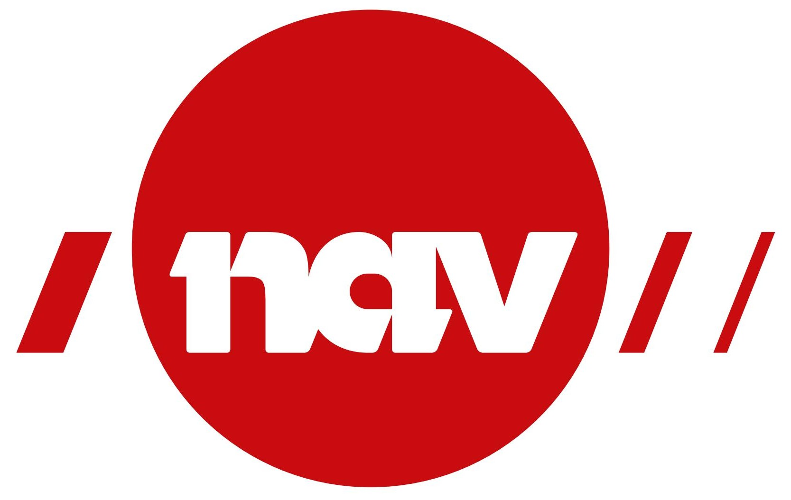
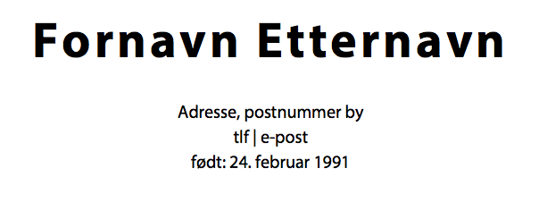
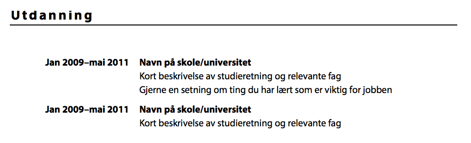
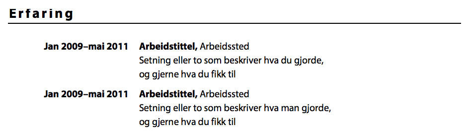
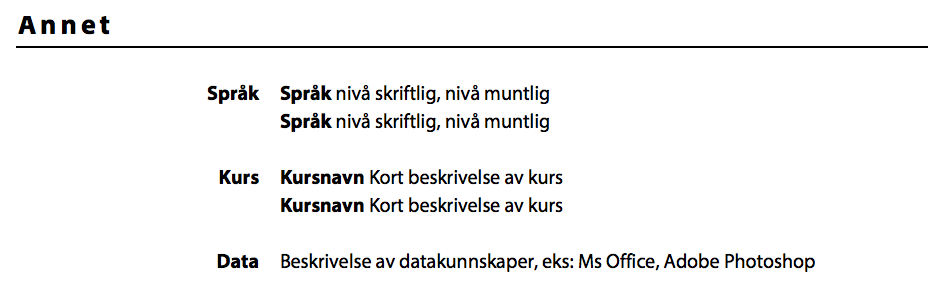
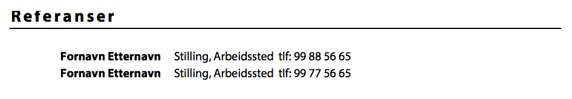
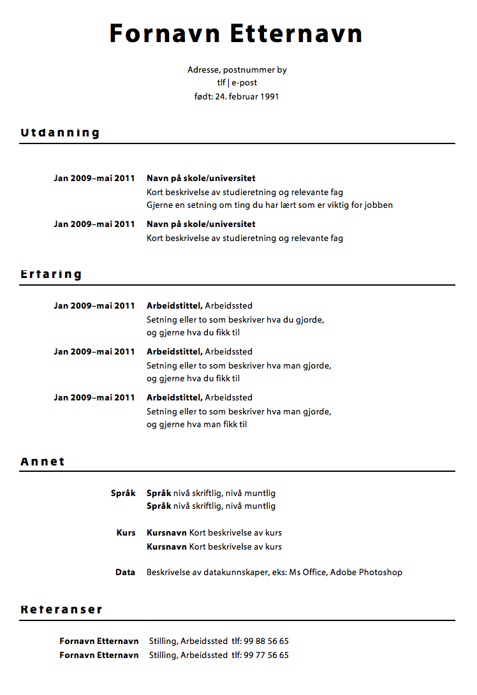

When you apply for a job in Norway, you nearly always have to hand in a CV. Even norwegians find writing a good CV hard, and there are several helpful websites which offer tips, guides and templates in English or Norwegian. This section will help you quickly make a good CV that you can deliver to a potential employer.
NAV has a guide for the whole process of getting a job, in Norwegian and English here. Another useful resource in Norwegian is CV-nerden. When you get a good grasp of the Norwegian language, you can check out these sites to improve your CV.
If your Norwegian or English skills are not that great, we recommend writing the CV in your own language, then get help translating it to Norwegian or English. Click here to download a CV template in your language. To get a template in a different language, scroll to the bottom of the page, and select among the languages available. If you can, translate this guide and the CV template to a new language by clicking here.
Start with your name and personal information. You may add a picture of yourself, but you do not have to.
Start with your most recent education, and work backwards. Include name of school, field of study and any specialization.
Work experience does not only have to be paid work, but can be volunteer work or personal projects. Again, start with the most recent. If you have a lot of work experience, only write down the longest employments and the experience most relevant to the job you are applying to.
In this part, you can write any other information that can help you get the job. Common points are which languages you know, and how well you know them, any training or courses you have, computer or other skills that are not covered by the other sections, interests or hobbies.
References are people your potential employer can contact and ask questions about you. This should be a person of authority like a former employer, a teacher or a government worker you have a good relationship with. You should always ask before putting a person down as a reference.
The whole CV should be between one and two pages. Be confident when writing about your skills, but do not lie or exaggerate. Be as objective as possible - write facts, not opinions.
Good luck getting a job!
